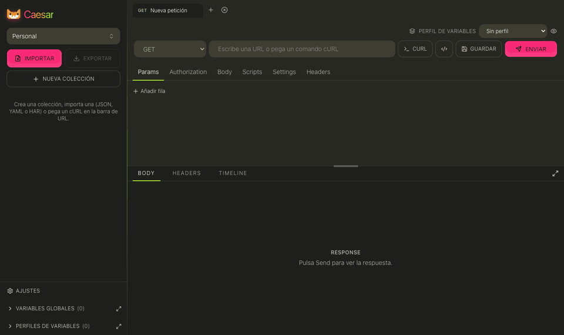

Inicio › Guía de funciones
Guía de Caesar: todas las funciones, una a una
Caesar es un cliente API de escritorio hecho para ir rápido: arranca al instante, guarda todo en tu equipo y no te pide una cuenta para empezar. Esta guía recorre cada función con un GIF del resultado real, desde tu primera petición hasta tests, GraphQL, WebSockets y trabajo en equipo.
¿Qué es Caesar?
Caesar es un cliente de APIs de escritorio para Windows, macOS y Linux. Sirve para construir, enviar y probar peticiones HTTP, GraphQL y WebSocket, organizarlas en colecciones y compartirlas con tu equipo, todo desde una interfaz limpia en la que el color y el teclado te ahorran clics.
- Local-first: en modo Invitado tus colecciones viven en tu dispositivo. Funciona sin conexión y sin cuenta.
- Rápido de verdad: está hecho con Rust y Tauri, no con un navegador empaquetado.
- Familiar: si vienes de otro cliente API, importas tus colecciones y los scripts
pm.*siguen funcionando. - Fair Source (FSL): el código es público y puedes usarlo gratis. No es de código abierto: está prohibido venderlo.
¿Para quién es? Para quien prueba APIs a diario (backend, frontend, QA, móvil) y quiere una herramienta ligera, privada y sin fricción. También para quien necesita compartir colecciones con su equipo sin montar infraestructura.
Por qué va tan rápido
La velocidad de Caesar no es un truco: viene de cómo está construido.
Instalar Caesar
Descarga el instalador de tu sistema desde la página de descargas o desde tu tienda:
| Sistema | Archivo / Tienda |
|---|---|
| Windows | Instalador .exe de 64 bits (también .msi) · Próximamente en la Microsoft Store |
| macOS (Intel y Apple Silicon) | .dmg universal, firmado y notarizado con Apple |
| Ubuntu (Snap Store) | sudo snap install caesar o desde la tienda de aplicaciones de Ubuntu (Snap Store) |
| Linux | .deb (Debian/Ubuntu) o AppImage (cualquier distro) |
La primera vez puede salir un aviso del sistema, sobre todo en Windows (SmartScreen). Es normal en un proyecto nuevo y la guía de avisos te explica qué pulsar. Después, Caesar se actualiza solo.
Sin línea de comandos. Caesar es una aplicación de escritorio: no hace falta Node, Docker ni ninguna instalación extra para usarla.
Tu primera petición
Abre Caesar y pulsa Nueva pestaña (Ctrl+T). Elige el método (GET, POST, PUT, PATCH, DELETE, HEAD u OPTIONS), escribe la URL y pulsa Enviar o Ctrl+Enter.
- Escribe la URL en la barra superior.
- Pulsa Enviar. Verás una animación con los pasos de la petición (resolver el nombre, conectar, enviar, recibir).
- Lee la respuesta debajo: estado, tiempo, tamaño y cuerpo.
- Pulsa Ctrl+S para guardarla en una colección.

Además de los siete métodos habituales, en Ajustes puedes añadir métodos extra (por ejemplo los de WebDAV). Solo se rechazan CONNECT y TRACE.
Parámetros y cabeceras
Las pestañas Parámetros y Cabeceras usan un editor clave/valor: añades filas, las activas o desactivas con la casilla sin borrarlas, y la URL se actualiza sola.

- Desmarca una fila para probar sin ella sin perderla.
- Puedes usar
{{variables}}en claves y valores (ver Variables y perfiles). - Si pegas una URL con
?a=1&b=2, los parámetros aparecen en su tabla.
Cuerpo de la petición
En la pestaña Cuerpo eliges el formato que necesite tu API:
| Tipo | Cuándo usarlo |
|---|---|
| JSON | APIs REST modernas. Editor con comprobación de sintaxis y colores. |
| Texto | XML, texto plano u otro contenido en bruto. |
| Form-data | Formularios con archivos adjuntos (hasta 100 MB por archivo). |
| x-www-form-urlencoded | Formularios clásicos. |
| GraphQL | Editor propio de Query y Variables (ver GraphQL). |

Por seguridad, Caesar solo adjunta archivos que tú has elegido en el selector del sistema.
Leer la respuesta
La respuesta se muestra con el estado (con color), el tiempo y el tamaño, y tres vistas:
- Pretty: el JSON formateado y con colores. Puedes ocultar los valores vacíos para leer mejor.
- Raw: el texto tal cual llegó.
- Cronología: los pasos de la petición con su duración.
Con el filtro JSONPath te quedas solo con la parte que te interesa, por ejemplo $.data[0].id. Y con Ctrl+F buscas dentro de la respuesta (ver Pestañas y búsqueda).
Las respuestas se leen hasta 10 MB; si una es más grande, Caesar la trunca y te avisa para no bloquear la ventana.
Pegar y copiar cURL
Si te pasan un comando curl (de la documentación de una API, de las herramientas del navegador o de un compañero), pégalo directamente en la barra de URL. Caesar crea la petición con su método, cabeceras y cuerpo.

Y al revés: copia cualquier petición como cURL para compartirla en un ticket o ejecutarla en una terminal. Hay un comando para ello (sin atajo por defecto, puedes asignarle uno).
Autenticación
En la pestaña Autorización eliges cómo identificarte. Caesar admite estos tipos:

La opción Heredar es la más cómoda: defines la autenticación una vez en la colección o carpeta y todas las peticiones de dentro la usan. Si cambia el token, lo cambias en un solo sitio.
Tip: guarda el token en una variable ({{token}}) y usa esa variable en la autenticación; así no lo pegas en cada petición.
Variables y perfiles
Las variables te dejan escribir {{baseUrl}} en lugar de una URL fija. Hay tres niveles:
- Variables globales: valen en todas tus colecciones.
- Variables de colección: solo para esa colección o carpeta.
- Perfiles de variables: conjuntos con nombre (Desarrollo, Staging, Producción…) que activas con el selector junto a Enviar.

- Las variables
{{x}}se ven de otro color en la URL, cabeceras, parámetros y autenticación, para que no se te escape ninguna. - Ctrl+clic en una variable abre su valor para verlo y editarlo sin salir de la petición.
- Ctrl+Espacio abre el selector de variables.
- Puedes marcar variables como secretas para que no se vean a simple vista.
- Al importar una colección con entornos, estos pasan a perfiles y sus globales a variables globales.
Tests y scripts
La pestaña Scripts ejecuta un script (sus resultados salen en la pestaña de la respuesta) cuando llega la respuesta. Usa una sintaxis conocida (pm.*), así que lo que ya sabes sirve:
pm.test("responde 200", () => {
pm.expect(pm.response.code).to.equal(200);
});
const datos = pm.response.json();
pm.test("trae usuarios", () => {
pm.expect(datos.length).to.be.above(0);
});
pm.testypm.expectpara comprobar estado, cabeceras y cuerpo.pm.response.json()para leer el cuerpo ya convertido.pm.environment.set,pm.collectionVariables.setypm.globals.setpara guardar valores.
Seguro por diseño. Los scripts se ejecutan en un intérprete propio de un subconjunto de JavaScript: sin red, sin acceso al sistema de archivos y sin eval. Por eso un script importado no puede hacer nada fuera de lo suyo.
Encadenar peticiones
Un caso típico: iniciar sesión y usar el token en las demás peticiones. Con un test en la petición de login:
const r = pm.response.json();
pm.environment.set("token", r.access_token);A partir de ahí, cualquier petición puede usar {{token}} en su cabecera o en la autenticación Bearer. Ejecutas el login una vez y el resto queda autenticado, sin copiar y pegar.
Colecciones y carpetas
Las colecciones son el cuaderno donde guardas tus peticiones. Crea una desde la barra lateral, añade carpetas dentro de carpetas y arrastra y suelta para reordenar.

- Cada colección o carpeta puede tener sus propias variables y su autorización, heredada por lo que contiene.
- Se guarda sola: Caesar hace autoguardado y conserva tus pestañas y borradores al cerrar.
- Puedes compartir una colección con tu equipo (ver Sincronización y equipos).
Importar y exportar
No empiezas de cero. Caesar importa lo que ya tienes y exporta cuando quieras:
| Formato | Importar | Exportar |
|---|---|---|
| Otros clientes API (colecciones v2.1 y entornos) | Sí | Sí (JSON) |
| Otros clientes API (exportaciones JSON) | Sí | – |
| JSON de Caesar | Sí | Sí |
| YAML | Sí | Sí |
| HAR (del navegador) | Sí | Sí |
| cURL | Pegando en la barra de URL | Copiar como cURL |

Antes de compartir una colección, Caesar puede hacer una copia de seguridad para que no pierdas nada.
Generador de código
Con el botón </> conviertes la petición activa en código listo para pegar en tu proyecto. Hay 20 lenguajes y librerías, entre ellos cURL, Python (Requests), JavaScript (Fetch, XHR), Node.js (Axios), Go, Rust, Java, Kotlin, C#, PHP, Ruby, PowerShell, Swift y Dart.

Puedes ajustar opciones como la sangría, el tiempo de espera o seguir redirecciones, y copiar el resultado con un clic.
GraphQL
Elige el cuerpo GraphQL y Caesar te da un editor de Query y otro de Variables:
- Cargar el esquema con una introspección.
- Autocompletado de campos y tipos mientras escribes.
- Explorador del esquema para navegar por tipos y campos.
- Beautify para formatear la consulta.
- Generar variables a partir de la consulta y selector de operación cuando hay varias.

Las peticiones GraphQL se importan y exportan en el formato estándar de colecciones.
WebSockets
Crea una petición WebSocket, conecta y ve la conversación en una línea de tiempo: lo que envías y lo que recibes, con hora y tamaño.

- Escribe la URL con
ws://owss://(si poneshttp(s), se convierte). - Puedes indicar subprotocolos separados por comas.
- Envía mensajes de texto o binarios (en hexadecimal o base64) y revisa los binarios en un volcado hexadecimal.
- Admite
{{variables}}en la URL.
Pestañas y búsqueda
Trabaja con tantas pestañas como necesites. Caesar recuerda las que tenías abiertas y vuelve a dejártelas igual al abrirlo.
- Ctrl+T nueva, Ctrl+W cerrar, Ctrl+1…9 ir a la pestaña N.
- Alt+← / → vuelve a la pestaña que visitaste antes o después.
- Ctrl+F busca en la respuesta o en el editor.
- Clic derecho o Ctrl+Mayús+W cierra todas y te lleva a la pantalla de inicio con el gato.
En macOS, Ctrl se sustituye por Cmd.
Espacios de trabajo
Un espacio de trabajo es un conjunto separado de colecciones, variables y pestañas: uno para el trabajo, otro para proyectos personales, otro por cliente. Se cambia desde el selector de la barra lateral.

El modo Invitado y las cuentas sin Pro incluyen un espacio; con Pro puedes tener todos los que quieras.
Atajos de teclado
Todos los comandos de Caesar tienen un atajo, y puedes cambiarlos todos. Abre el editor con Ctrl+/.

| Acción | Atajo por defecto |
|---|---|
| Enviar la petición | Ctrl+Enter |
| Guardar en la colección | Ctrl+S |
| Nueva pestaña / Cerrar pestaña | Ctrl+T / Ctrl+W |
| Ir a la barra de URL | Ctrl+L |
| Buscar | Ctrl+F |
| Elegir una variable | Ctrl+Espacio |
| Abrir ajustes | Ctrl+, |
| Ver y editar atajos | Ctrl+/ |
Además puedes crear acciones propias que encadenan varios comandos y poner botones a tu elección junto a la URL.
Temas, fuentes e idiomas
Caesar viene con seis temas: Monokai (por defecto), Dracula, Tokyo Night, Nord, One Dark y GitHub Light para quien prefiere un fondo claro.

También puedes elegir la fuente y el tamaño del texto, desactivar las animaciones y ajustar el ancho de la barra lateral. La interfaz está en español, inglés, alemán, francés e italiano.
Ajustes de red
En Ajustes controlas cómo se envían las peticiones:
| Ajuste | Qué hace |
|---|---|
| Seguir redirecciones | Sigue hasta 10 redirecciones, o ninguna. |
| Tiempo de espera | 30 segundos por defecto. Con 0 o más de 1 hora se usa el máximo de 3600 s, útil para depurar sin que salte el error. |
| Verificar SSL | Desactívalo solo para probar servidores con certificados autofirmados. |
| Versión HTTP | Automática, HTTP/1.1 o HTTP/2. |
| Métodos extra | Añade métodos personalizados además de los habituales. |
Sincronización y equipos
Con una cuenta Pro puedes usar las mismas colecciones en varios ordenadores y compartirlas con otras personas.
- Sincronización personal: tus colecciones, variables y perfiles aparecen en todos tus equipos. Los cambios se fusionan por elemento, así que dos equipos no se pisan el trabajo.
- Cifrado en tu equipo: lo que se sube va cifrado desde tu ordenador; el servicio solo guarda datos ilegibles.
- Clave de recuperación: la guardas tú y te permite recuperar tus datos si pierdes un equipo.
- Vincular un equipo nuevo: se aprueba desde otro equipo tuyo con un código de seis cifras que comparas en ambas pantallas.
- Equipos: comparte una colección o un espacio de trabajo con un código; quien lo introduce se une y ve los cambios.

Importante: en una colección compartida, quien tiene el código puede leer y modificar su contenido; no hay roles. Comparte el código solo con quien deba editar.
Invitado, cuenta y Pro
| Modo | Incluye |
|---|---|
| Invitado (gratis) | Todas las funciones de petición, tests, GraphQL, WebSockets, importar/exportar y generador de código. Datos solo en tu dispositivo, 1 espacio de trabajo. |
| Cuenta (7 días de prueba) | Igual que Invitado, en local, mientras decides si activas Pro. Pasados los 7 días sin Pro, la cuenta se elimina. |
| Pro (suscripción) | Sincronización cifrada, equipos y colecciones compartidas, y espacios de trabajo ilimitados. |
El precio, la periodicidad y los impuestos se muestran en la página de pago antes de pagar. Cancelas cuando quieras desde Ajustes → Cuenta y suscripción → Gestionar suscripción y tienes reembolso durante 14 días. Más detalle en Precios y suscripción.
Privacidad y seguridad
- Sin telemetría ni analítica. Caesar no envía datos de uso.
- La interfaz no hace peticiones de red: las ejecuta el núcleo en Rust, que valida las URLs, solo permite http y https y limita el tamaño de respuestas y archivos.
- Tus claves no salen del sistema: la clave de cifrado se guarda en el llavero de tu sistema operativo.
- Permisos mínimos y política de seguridad estricta en la aplicación.
- En modo Invitado tus datos no salen de tu equipo.
Más en Seguridad y privacidad y en la política de privacidad.
Actualizaciones
Caesar se actualiza solo: al abrir busca una versión nueva y, si la hay, la descarga, la instala y se reinicia. Tus pestañas y borradores se conservan. Cada paquete va firmado y la aplicación comprueba la firma antes de instalarlo.
- En Ajustes → Actualizaciones puedes desactivarlas o pulsar Buscar actualizaciones.
- En Linux, si lo instalas desde la Snap Store (
sudo snap install caesaro la tienda de Ubuntu), Snap lo actualiza solo; con el AppImage se actualiza dentro de la app, y el.debse reinstala a mano.
Buenas prácticas
- Usa variables para lo que cambia (servidor, versión, tokens) y perfiles para cada entorno.
- Define la autenticación en la colección y deja las peticiones en «Heredar».
- Añade al menos un test por petición importante: estado y una comprobación del cuerpo.
- Nombra las peticiones con verbo y recurso («Listar usuarios», «Crear pedido») y agrúpalas por carpetas.
- Exporta una copia de tus colecciones importantes de vez en cuando.
- No dejes secretos en la URL: usa variables secretas o la autenticación.
- Usa un espacio por proyecto o cliente para no mezclar variables.
Problemas habituales
La petición no conecta
Comprueba que la URL empieza por http:// o https://, que no hay una variable sin resolver (sale con otro color) y que tienes conexión. Mira la cronología de la respuesta: indica en qué paso falla.
Error de certificado SSL
Si pruebas un servidor local con certificado autofirmado, desactiva Verificar SSL en Ajustes. Vuélvelo a activar para APIs reales.
Me da 401 o 403
Revisa la pestaña Autorización: si está en «Heredar», comprueba la de la colección. Confirma que el token no ha caducado y que la variable existe en el perfil activo.
Se agota el tiempo de espera
Sube el tiempo en Ajustes. Con 0 se usa el máximo (1 hora), pensado para depurar.
Mis tests no hacen nada
Los tests se ejecutan después de recibir la respuesta, así que necesitas enviar la petición. Si hay un error en el script, se muestra junto a los resultados.
No puedo sincronizar o compartir
Estas funciones requieren Pro. En modo Invitado o con la cuenta en prueba, Caesar funciona en local. Si ya has pagado, pulsa Ya he pagado, comprobar en Cuenta y suscripción.
Preguntas frecuentes
¿Caesar es bueno para probar APIs?
Sí: cubre REST, GraphQL y WebSocket con tests, variables, perfiles, importación de colecciones y generación de código, en una app ligera que funciona sin conexión.
¿Es gratis y de código abierto?
Es gratis en modo Invitado y su código es público, pero no es de código abierto: usa la licencia FSL y está prohibido venderlo. Cada versión pasa a MIT a los dos años.
¿Dónde se guardan mis colecciones?
En tu dispositivo. Solo salen de él si activas la sincronización o compartes con un equipo, y en ese caso van cifradas.
¿Puedo traer mis colecciones de otro cliente API?
Sí. Importa el archivo de la colección (y los entornos, que pasan a perfiles) desde la barra lateral.
¿Funcionan mis scripts actuales?
Los tests con pm.test, pm.expect, pm.response.json() y las funciones para guardar variables sí. Caesar usa un intérprete seguro de un subconjunto de JavaScript, así que un script que dependa de librerías externas o de red no se ejecutará.
¿Hay línea de comandos o integración en CI?
Por ahora Caesar es una aplicación de escritorio. Puedes exportar peticiones como cURL o código para usarlas en tus scripts.
¿Necesito una cuenta?
No. La cuenta solo hace falta para sincronizar y trabajar en equipo.
¿En qué sistemas funciona?
Windows (.exe y .msi; próximamente en la Microsoft Store), macOS (Intel y Apple Silicon) y Linux (tienda de Ubuntu / Snap Store con sudo snap install caesar, .deb y AppImage).
Pruébalo ahora
Descargarlo es gratis y no necesitas cuenta. Si te falta algo o encuentras un fallo, cuéntalo en GitHub.